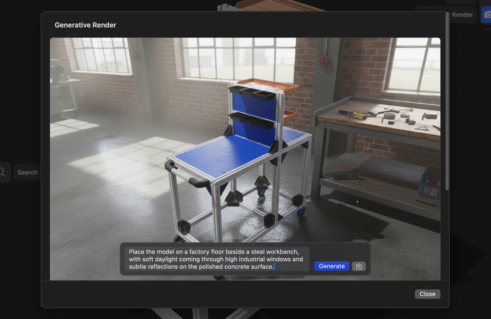
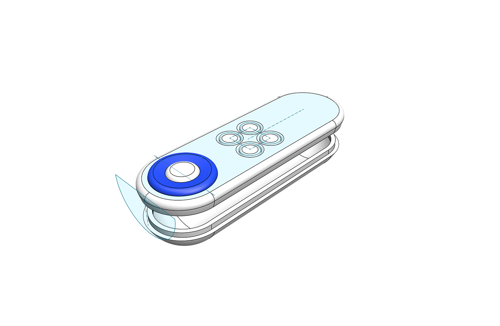

用了 Shapr3D 三年，这些藏得真深的功能我最近才摸到
从生成式渲染的提示词技巧到抽壳不选面做封闭空心体，从草图投影跨面刻字到偏移面负值调配合间隙——聊聊几个官方不怎么宣传但一用就回不去的隐藏玩法。
你以为Shapr3D官网上被广泛安利的这个应用只是个"iPad 上能建模"的轻量 CAD？或者以为它就是把 SolidWorks 那套核心工具搬了个家？我以前也是这么想的。直到最近把它翻了个底朝天，才发现里面藏了好几个大多数人没注意到的玩意儿——有的是工具本身的冷门参数，有的是几个功能串起来才能触发的组合技。
写这篇不是为了列工具清单，就挑几个我自己用着最爽、但同事聊起来"还有这操作？"的东西说说。
生成式渲染：别写结构，写氛围
很多人点开生成式渲染，面对提示词框直接懵了——"我该写什么？" 然后老老实实填了"把这个零件改得更光滑"，结果出来的图和原模型没什么区别，就调了个滤镜。
其实 AI 根本不负责改模型结构。你的模型形状在基础截图里已经定死了，生成式渲染干的事情只有一件：给这个模型套上一层光影和材质的氛围。所以提示词里别写"改圆角""加凹槽"这种结构描述，写环境。
写"暗色摄影棚、顶光、微反光地面、背景虚化"，出来的像产品宣传片。写"木质桌面、窗边自然光、旁边放一杯咖啡"，出来的像家居场景图。写"磨砂金属、蓝色发光线条、深空背景"，直接赛博朋克风。
还有一个隐藏技巧：基础截图的构图和角度直接决定生成效果的上限。截图时把模型摆到你想要的最终角度、调好比例，生成只是在这个基础上"上妆"——角度没选好，提示词写上天也救不回来。

生成额度免费档每天 3 张，Pro 档 50 张，shapr3d文档里有完整的档位对比表，建议 Pro 用户先把最满意的截图角度都存好，然后一口气跑生成，别一张一张地试浪费额度。
抽壳不选面：做封闭空心体的捷径
抽壳（Shell）这个工具大家都知道——建个盒子，选顶面，抽壳，变成一个开口的容器。但你试过一个面都不选直接抽壳吗？
这个操作官方文档里只是一句话带过，没有专门的教程。不选面抽壳，得到的是一个完全封闭的空心体——没有任何开口的那种。适合做什么？中空的浮力件、内部掏空的装饰品、需要减重但不想留开口的结构件。
要注意两件事：一是封闭空心体如果拿去 3D 打印，记得自己开个排气孔，不然打印时内部空气膨胀会炸；二是抽壳壁厚别太大，外形曲率太急的地方容易报错，缩小壁厚或者把尖角倒圆就好。
草图投影 + 文本 + 浮雕：曲面刻字三步走
草图模式下有个投影（Project）工具，大多数人用它把实体边缘"印"到当前草图平面上当基准。但投影有个隐藏用法：3D 空间版的投影可以把草图元素投到曲面上。
这个组合技我管它叫"曲面刻字三步走"：
- 在一个与目标曲面平行的平面上用文本工具写出你要刻的字；
- 把草图里的文字用 3D 投影投到目标曲面上；
- 沿着投影后的文字轮廓走环绕浮雕，字就"长"在曲面表面了。
听起来简单，但中间有几个坑：文本草图的平面不能离目标曲面太远，投影会丢精度；字体选得太细、环浮雕深度设得太深，边缘容易破。我现在用的经验值是字体高度不小于 2 毫米，浮雕深度 0.3 到 0.5 毫米之间，FDM 打印出来刚好清晰可辨。
偏移面负值：配合间隙的懒办法
偏移面（Offset Face）的常规用法是选中一个面往外推，做壁厚、做胶位。但很少有人用偏移负值——把整个实体往内缩一圈。
这个操作在做配合件的时候太省时间了。比如你做了一个外壳，现在要做一个和它刚好能装进去的内芯。常规套路是重新画一个、重新拉伸、重新标尺寸，改来改去。用偏移面的话：
- 选中外壳的外表面；
- 执行偏移面，输入负值（比如 -0.3 毫米，留打印公差）；
- 新的缩小版实体就是内芯的基础，修剪掉多余面就能用了。
更懒的办法：直接选中整个实体偏移负值，整体缩一圈。配合间隙靠偏移值控制，不用再算壁厚差。唯一的限制是偏移不能跨越太复杂的几何特征，有尖角的地方可能失败，这时把面拆开来逐个偏移就行。

免费档的"删旧建新"循环
这个不算什么隐藏功能，但我发现真有人不知道。从官方下载拿到手就能用的 Basic 免费档限制 2 个项目，很多人看了这个数字就放弃了，以为只能玩两次。
其实你可以删旧项目建新的。我学建模那会儿就是这么练的：画完一个零件，觉得差不多了，删掉，开新项目画下一个。两个月下来画了快 20 个零件，全是免费档完成的。
删项目不会有任何副作用——不像某些 SaaS 会留计数或者恢复付费时才给你数据，Shapr3D 的删就是真删，干净利落。
一个别踩的坑
抽壳和偏移面这两个工具，在曲率变化剧烈的地方容易报错，而且报错信息非常笼统——就一个红色感叹号，说"操作失败"。别慌，按这个顺序排查：先把壁厚/偏移值调小，不行就把外形的尖角倒圆，再不行就简化外形（删掉一些装饰性的小特征再操作）。
还有，生成式渲染出来的图是效果图，不是工程图。尺寸不准、比例可能有微调，发给加工商之前一定要附上带尺寸标注的 2D 工程图，别只发一张渲染图让人家猜。
上面这几个东西，有的是我翻帮助中心时在边角处看到的一句话，有的是瞎点按钮不小心试出来的。Shapr3D 的建模内核是实打实的 Parasolid，功能密度其实不低——很多好用的东西藏在"非典型用法"里，等你自己去挖。
这套资料我同步维护在三个仓库里，GitHub是主仓库，Gitee方便国内直接克隆，GitCode作为备份以防万一，内容都是一模一样的。